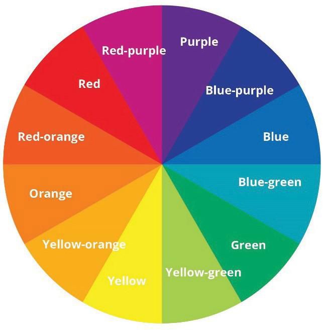

Tertiary colours are normally arranged in between primary and secondary colours in the colour wheel. This arrangement illustrates which primary colours when mixed with secondary colours form tertiary colours. Figure 3.8 shows a twelve-colour wheel that illustrates primary, secondary and tertiary or intermediate colours.

Colour scheme
An arrangement or combination of colours and their relationship on visibility is known as the colour scheme. Colour schemes are used to create uniqueness and enhance visual attraction. The major colour schemes are monochromatic, analogous, complementary, cool and warm colours.
Analogous colours:
These are colours arranged side by side with primary colours on a colour wheel. For example, violet, red, red violet and red-orange are both analogous colours which share the same hue red base.
Warm and cool colours:
Warm colours are those colours that suggest a warm feeling. These include red, yellow and orange. Cool colours such as green, blue and purple create a sense of calmness and coldness. Usually, they are creatively used to evoke relaxation or calm feelings in art. Figure 3.9 shows warm and cool colours.
Complementary colours:
These are colours which are opposite to each other on the colour wheel. Yellow and purple, orange and blue, yellow-green and red-purple, and red and green are complementary colours. Figure 3.9 also shows complementary colours.